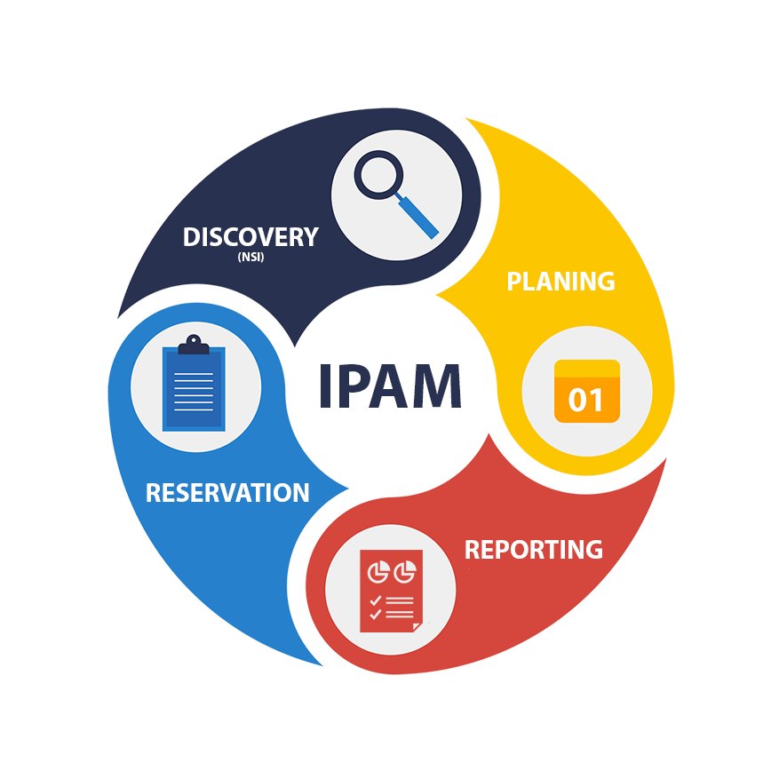

Ürünler
İş Zekası Yönetim Platformu

Telekomünikasyon abonelerininin 360 derece görünümünü sunmayı hedefleyen çözümdür. OSS ve BSS sistemlerinden topladığı veriyi temizleyen, ilişkilendiren ve raporlayan iş akış motoru desteği sunmaktadır. Çözümün temel hedefi Sabit Genişbant müşterilerinin kullanıcı deneyimlerini anlamak ve iyileştirmek amaçlı aksiyonların planlanmasını sağlamaktır.
DSL Ağ Analiz Sistemleri, CRM Sistemleri, Şebeke Envanterleri, Coğrafi Bilgi Sistemleri, Modem Yönetim Sistemleri gibi sabit şebekelerde bulunan farklı kaynaklardaki son kullanıcı bilgilerinin tek bir noktada raporlanması
Ölçeklenebilir ve güçlü altyapısı sayesinde çok yüksek miktarlardaki son kullanıcı verisinin işlenmesi ve analiz edilmesinin garanti edilmesi
Oluşturulmuş rapor verisinin harici ortamlara sunulması (REST API, FTP Entegrasyonu, DB Entegrasyonu)
Farklı alanlar arasında çapraz rapor alma imkanı (CRM, Şebeke, Modem bilgilerini tek ekranda karşılaştırabilme yeteneği)
Geçmişe dönük veriler ile trend analizi imkanı
Drill-down sorgulama ve raporlama
Tek abone bazlı deneyim sorgulama
Çağrı merkezi entegrasyonu için REST API
DPI Console

IP Adres Yönetim Sistemi

NMS Çözümleri

Telekomünikasyon şebekelerinin operasyonuna yönelik birden fazla müşteriyi ve birden fazla şebeke teknolojisini aynı anda destekleyen altyapı ve sistemleri içeren çözüm ailesidir. Ölçeklenebilir, yüksek erişilebilir ve esnek mimarisi sayesinde şebeke büyüklüğüne bakmaksızın hizmet verebilmektedir.
Fiziksel va mantıksal envanterin şebeke üzerinden keşfedilmesi ve uzlaştırma
Keşif işlemleri için EMS/NMS/NE desteği
Zamanlamış ve dağıtık keşif
Ölçeklenebilir tasarım (Onbinlerce router ve switch barındıran şebekeler için keşif yeteneği)
Harici sistemlerle entegrasyon (BSS entegrasyonu)
Çoklu-üretici desteği (Nokia, Huawei, Ericsson, Cisco...)
Çoklu-müşteri desteği (multi-tenancy)
Farklı şebekelerin tek platformda desteklenmesi (MPLS, BRAS, DPI şebekelerinin yönetimi tek platformda)
Merkezi ve ajanlı log toplama. Gerçek zamanlı işleme, zenginleştirme, alarm üretimi ve raporlama
Farklı ölçekler için farklı veri kayıt seçenekleri (HDFS, RDBMS, Dosya Sistemi)
Dahili karmaşık olay işleme motoru ile zaman ve olay pencereleri içerisinde alarm kuralları tanımlayabilme yeteneği
Olay zenginleştirme amaçlı harici sistem entegrasyonu
Script çalıştırabilme yeteneği (kurala bağlı olarka harici sistemler üzerinde aksiyon alınabilme esnekliği)
Ölçeklenebilir performans izleme sistemi (1K olay/sn'den 500K olay/sn'ye)
SNMP, SSH ya da script'lerle esnek veri toplama
Esnek ve kolay konfigüre edilebilir performans izleme ekranı (Dashboard)
"Şebeke ve Topoloji Keşif" bileşeni entegrasyonu ile topoloji bilgisi ile performans izleme yapılabilmesi
Kapasite planlama amaçlı raporlar
Filtrelenmiş metrikler için dahili eşik değer kontrolleri
Çoklu-müşteri desteği (multi-tenancy)
Şebekede üreyen olaylar ile ilgili alarmların yönetimi (SNMP Trap, Syslog..)
Esnek Alarm tanım taslakları
Otomatik ve elle alarm temizleme yeteneği
Gerçek zamanlı Alarm yönlendirme (HP TeMIP desteği)
Tüm alarm senkronizasyonu için SOAP API desteği
Çoklu-müşteri desteği
Bildirim destği (Mail, SMS, IM v.b.)
Şebeke ve Topoloji Keşfi
Log Yönetim Sistemi
Performans İzleme Sistemi
Hata Yönetim Sistemi